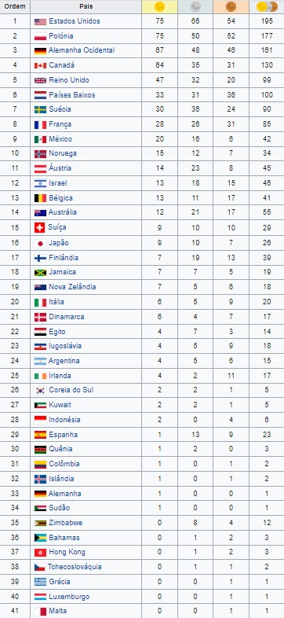

1980 Arnhem, HolandaAs Paraolímpiadas de Verão de 1980 foram os 6ºs Jogos Paraolímpicos a realizarem-se. Tiveram lugar em Arnhem, Holanda.Modalidades→Tiro com arco→Lawn bowls →Atletismo →Dardos Paralímpicos →Halterofilismo →Natação →Tênis de mesa →Lutas →Basquetebol em cadeira de rodas →Esgrima em cadeira de rodas →Goalball (esporte de demonstração) →Voleibol →Tiro Medalhas |